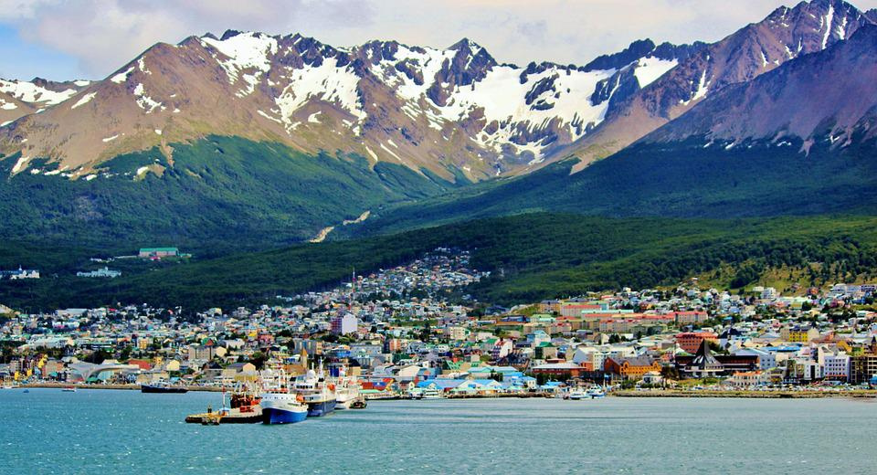

Bariloche

Recorra la ciudad, conozca su historia y alrededores llenos de paisajes sorprendentes. Navegue por las aguas cristalinas del lago Nahuel Huapi, visite la Isla Victoria y el bosque de Arrayanes
Cataratas del Iguazú

Veni a conocer una de las maravillas del mundo, y dejate llevar por las imponentes cataratas del Iguazu.
Costa Atlantica

Mar del Plata ofrece playas con distintas características que complacen todos los gustos. Desde las populosas playas céntricas Bristol, Popular, Punta Iglesia, Las Toscas a las de aguas más calmas por la protección de escolleras Varese y Cabo Corrientes
Jujuy

El Norte argentino guarda un secreto unico, sumerguite en la Puna, disfrutando de los paisajes asombrosos y dejate llevar por la cultura
Carlos Paz

Esta villa turistica destaca por sus balnearios naturales a la vera del río San Antonio y el arrollo Los Chorrillos. El dique San Roque es otro de sus principales atractivos.
Ushuaia
Ubicada en el archipiélago de Tierra del Fuego, esta ciudad apodada como el "fin del mundo", ofrece un paisaje de cordillera con la costa, el faro del Fin del Mundo, el Lago Escondido y mucho más